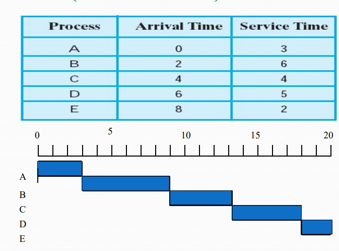
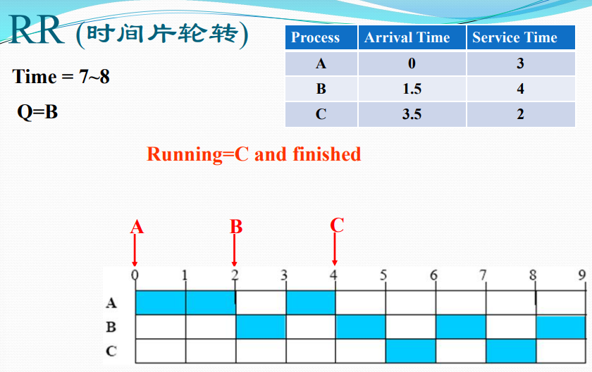
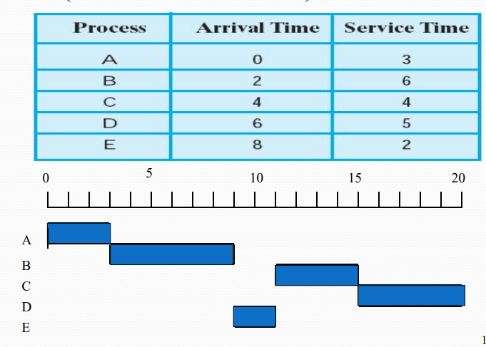
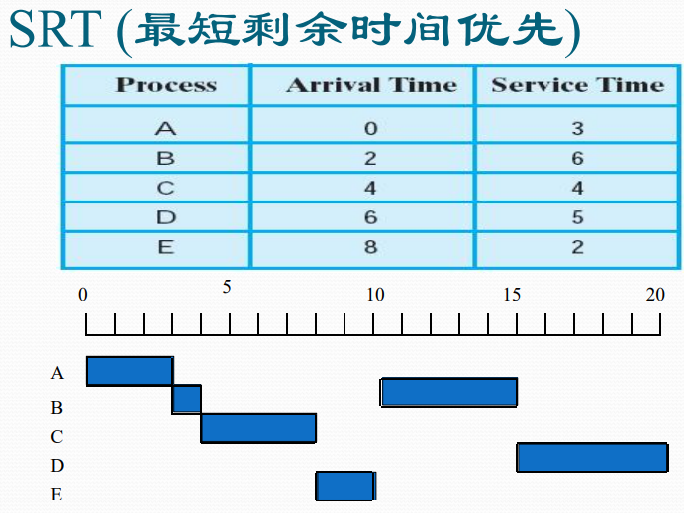
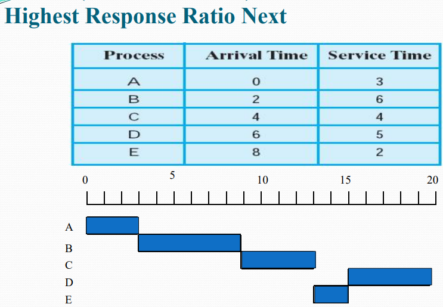
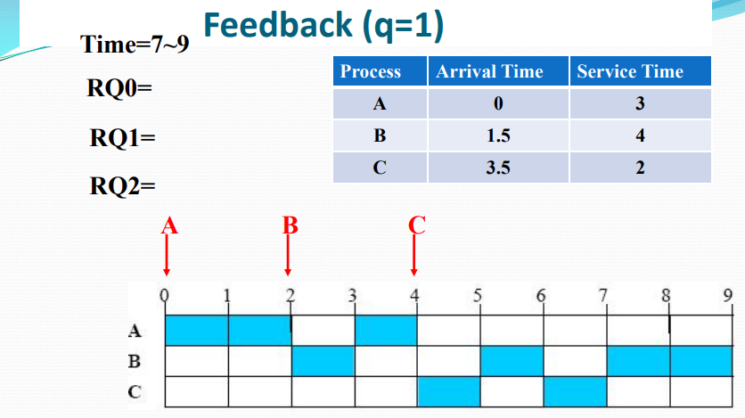

第二章 处理器管理
一、处理器
处理器部件的简单示意

- 用户程序可见寄存器：可减少程序员访问主存次数，所有程序可使用，包括数据寄存器、地址寄存器
- 控制与状态寄存器：被具有特权的操作系统使用，控制程序的执行，包括程序计数器PC，指令寄存器IR，条件码CC，标志位
- 程序状态字PSW：记录当前程序运行的动态信息
指令与处理器模式
- 机器指令：计算机系统执行的基本命令（执行需要经过取指、解码、执行）
指令流水线：同时执行多个指令，使得CPU充分利用
特权指令：只能被操作系统内核使用的指令（启动I/O指令、置PC指令、等等）
计算机可以通过设置处理器模式实现特权指令的管理
- 0：操作系统内核，可以执行全部指令
- 1：系统调用
- 2：共享库程序
- 3：用户程序，只能执行非特权指令
处理器模式的切换：
- 可以从用户模式和内核模式之间来回转换
- 中断，异常等触发用户模式->内核模式
- OS内核处理完成后，调用中断返回指令，内核模式->用户模式
二、中断管理
中断
程序执行过程中，遇到急需处理的事件时，暂时中止CPU现行程序的运行，转去执行相应的事件处理程序，处理完成后返回原程序被中断处
注意点：
- 处理器在硬件上必须支持中断
- 多道程序设计实现必须有硬件层面的中断设施的支持、
- 操作系统是一系列中断（广义）处理子程序的集合
- OS中断系统是在硬件中断设施上扩充形成的产物，充分体现了软硬件协同
- 操作系统内核是中断驱动的
操作系统中断驱动：中断是激活操作系统的唯一方式
异常：当前运行指令引起的中断事件
系统异常：执行陷入指令而触发系统调用引起的中断事件
中断源：
- 处理器硬件故障中断事件（处理器故障等）：处理原则：保护现场，停止设备和CPU，向操作员报告，等待人工干预
- 程序性中断事件：（除数为0等）简单处理，（非法指令等）终止进程，（终止进程指令）终止进程，（虚拟地址异常）调整内存重新执行
- 自愿性中断事件（陷入指令）：保护现场并查入口地址，跳转具体处理程序
- I/O中断事件（外围设备报告I/O状态）：完成：调整I/O进程，释放等待进程；I/O出错：等待人工干预；I/O异常：等待人工干预
- 外部中断事件（外围设备发出信号引起中断）：时钟中断：计时与时间片‘处理；设备报到与结束：调整设备表；键盘鼠标：根据信号做出反应；关机/重启：写回文件，停止设备与CPU
中断系统
计算机系统中响应和处理中断的系统
- 硬件子系统：中断响应
- 软件子系统：中断处理
中断响应：在指令周期最后增加一个响应中断的微操作
中断装置：计算机系统发现并响应中断的硬件装置
- 处理器外：中断控制器
- 处理器内：指令控制逻辑和实现线路（陷阱）
- 请求OS服务的系统异常：处理器执行陷入指令（系统陷阱）
中断控制器：CPU的一个控制部件，外部设备向其发送中断请求IRQ，在中断寄存器中设置已发生的中断。
陷阱与系统陷阱：指令的逻辑和实现线路的一部分，指令出现异常后根据异常情况转向操作系统的异常处理程序。虚拟地址异常会越过陷进；执行陷入指令后会出发系统陷阱
中断响应过程：发现中断源，提出中断请求；终端当前程序的执行，转向操作系统的中断处理程序
中断的处理
中断处理程序：处理中断事件和恢复正常操作
中断处理过程：保护处理器状态，识别中断源，分别处理中断事件，恢复正常操作（直接返回/进程调度）
中断系统处理流程：
多中断的响应和处理
中断屏蔽：通过中断屏蔽位决定是否响应已发生的中断
中断优先级：响应中断的顺序
中断的嵌套处理：计算机响应中断后在中断处理的过程中可以再响应其他中断。层数需要有限制，如3层。先响应的有可能后处理

三、进程管理
进程及其状态
操作系统必须全方位管理计算机系统中运行的程序，因此操作系统为正在运行程序建立一个管理实体：进程
进程：一个具有一定独立功能的程序关于某个数据集合的一次运行活动，是操作系统进行资源分配和调度的一个独立单位
进程的五个实体部分：
- 数据结构P
- 内存代码C
- 内存数据D
- 通用寄存器信息R
- 程序状态字信息PSW
进程是否共享：不同程序是否在相同数据集上运行（D共享）；相同代码在不同数据集上运行（C共享，共享的代码成为可再入程序）；
如果是同一个外存数据文件/程序文件，那么是两次不同的进程（前述的程序都是内存级的）
进程状态：
- 运行态：占用处理器运行
- 就绪态：等待处理器运行
- 等待态：等待资源等不具备运行条件
进程三态模型：

进程挂起：系统资源不足时剥夺某些进程的内存和其他资源，调入OS管理的对换区，待适当的时候再调入内存。挂起时没有任何资源（与等待态不同）
三态都可以挂起，其中运行态挂起恢复后进入的是就绪态
进程的数据描述
进程控制块：PCB，记录刻画进程状态及环境信息的数据结构

- 标识信息：存放唯一标识该进程的信息（系统分配的标识号/用户定义的进程名）
- 现场信息：存放该进程运行时的处理器现场信息（用户可见/控制与状态寄存器，栈指针）
- 控制信息：存放与管理、调度进程相关信息（内存访问权限、已占用的资源等）
进程映像：某一时刻的内容及其执行状态集合，是内存级的物理实体

进程上下文：OS中的进程物理实体和支持进程运行的环境合成。
- 用户级上下文
- 寄存器上下文
- 系统级上下文
进程的管理
进程是心啊的队列模型

队列管理模块：操作系统实现进程管理的核心模块。操作系统建立多个进程队列。进程与资源调度围绕进程队列展开
进程的控制与管理
- 进程创建：进程表加一项，申请PCB，分配资源
- 进程撤销：从队列中移除，归还资源，回收PCB
- 进程阻塞：移入等待队列，保存现场信息
- 进程唤醒：等待队列中移出，移入就绪队列
- 进程挂起：收回资源至对换区
- 进程激活：分配内存，修改状态，出入相关队列
原语：若干指令构成的完整某种特定功能的程序，用于进程控制涉及对OS核心数据结构的修改
进程切换与模式切换
进程切换：被中断进程与待运行进程的上下文切换。保存被中断上下文；转向进程调度；恢复待运行进程的上下文
模式切换：进程切换必须在操作系统内核模式下完成，需要模式切换。又称处理器状态切换。用户模式和内核模式切换
模式切换基本任务：
- 中断装置完成正向模式切换（处理器模式转为内核模式，保存PC/PSW到核心栈，转向中断程序）
- 中断返回指令完成逆向模式转换（待运行程序核心栈弹出PSW/PC，处理器模式转用户模式）
具体工作流程
- (中断/异常等触发)正向模式切换并压入PSW/PC
- 保存被中断进程的现场信息
- 处理具体中断/异常
- 把被中断进程的系统堆栈指针SP值保存到PCB
- 调整被中断进程的PCB信息，如进程状态
- 把被中断进程的PCB加入相关队列
- 选择下一个占用CPU运行的进程
- 修改被选中进程的PCB信息，如进程状态
- 设置被选中进程的地址空间，恢复存储管理信息
- 恢复被选中进程的SP值到处理器寄存器SP
- 恢复被选中进程的现场信息进入处理器
- (中断返回指令触发)逆向模式转换并弹出PSW/PC
发生时机：
- 阻塞式系统调用、虚拟地址异常：进入等待态
- 时间片中断、发现更高优先级进程：进入就绪态
- 终止用系统调用、不能继续执行的异常：进入终止态
四、多线程技术
多线程环境概述
传统进程是单线程结构进程

存在问题：
- 进程切换开销大
- 进程通信开销大
- 限制了进程并发的粒度
- 降低了并行计算的效率
解决问题：把进程的两项功能“独立分配资源”与“被调度分派执行”分离开来
多线程结构进程：

多线程下进程是进行保护和资源分配的独立单位。
线程：进程的一条执行路径，调度的基本单位。同一进程下的所有线程共享主存空间和资源
线程状态：运行、就绪和睡眠。（挂起状态与资源相关，属于进程）。线程操作：孵化、封锁、活化、剥夺、指派、结束
OS感知线程：处理器调度线程，但是线程没有三状态；OS不感知线程：处理器调度进程，用户调度程序调度线程
并发多线程程序优点：
- 快速线程切换
- 减少系统管理开销
- 线程通信易于实现
- 并行程度提高
- 节省内存空间
KLT与ULT
内核级线程KLT
线程管理的所有工作由OS内核来做
特点：内核能调度同一进程中的多个线程并行执行，提高操作系统执行速度。但是应用程序在用户态，线程调度在内核态，控制权切换时需要模式切换
用户级线程ULT
用户空间运行的线程库，提供多线程应用程序的开发和运行环境。线程管理由应用程序完成，内核没有意识到线程的存在
特点：线程切换不需要内核模式，节省资源，允许应用调度算法，运行在任何OS上。但是不能利用多处理器的优点，仅有一个ULT能执行。一个ULT阻塞将引起整个进程的阻塞
Jacketing技术
线程陷入系统调用时，jacketing程序检查资源使用情况，决定是否执行进程切换或传递控制权给另一个线程
用户级线程vs内核级线程

多线程实现的混合策略
单应用的多个ULT可以映射成一些KLT，通过调整KLT数目，可以达到较好的并行效果

- 线程创建和调度同步也在应用程序中进行
- 多个用户级线程被映射到一些内核级线程上

各种策略总结：

五、处理器调度
处理器调度的层次
- 高级调度：长程调度，作业调度，决定能否加入到执行的进程池中
- 中级调度：平衡负载调度，决定主存中可用进程集合
- 低级调度：短程调度，进程调度，决定哪个可用进程占用处理器执行

高级调度
分时OS中，高级调度决定是否接收终端用户连接，命令能否被接纳
批处理OS中，高级调度从后备作业队列中选取作业进入贮主存，并为作业做好运行前的准备工作和完成后的善后工作
中级调度
提高内存利用率和作业吞吐量
决定哪些进程被允许驻留在主存中，把一些进程换出主存进入挂起状态，平衡系统的负载
低级调度
把处理器分配给就绪态进程或内核级线程
进程调度程序/分派程序：操作系统最核心部分
记住状态，决定获得占用处理器时间，分配、收回处理器
处理器调度算法
原则：
- 资源利用率：使得CPU或其他资源的使用率尽可能高且能够并行工作
- 响应时间：使交互式用户的响应时间尽可能小，或尽快处理实时任务
- 周转时间：提交给系统开始到执行完成获得结果为止的这段时间间隔称周转时间，应该使周转时间或平均周转时间尽可能短
- 吞吐量：单位时间处理的进程数尽可能多
- 公平性：确保每个用户每个进程获得合理的CPU份额或其他资源份额
优先数调度算法
根据分配给进程的优先数决定下一个运行进程
分为：
- 抢占式优先数调度算法
- 非抢占式优先数调度算法（没有运行态到就绪态的跳转）
优先数确定准则：进程负担任务紧迫程度，交互性，使用外设的频度，使用处理器的服务时间长短
服务时间长短：
- 计算时间短优先
- 剩余计算时间短优先
- 响应比高者优先（(等待时间+期待处理器服务时间)/期待服务器服务时间）
- 先来先服务
多用于高级调度
时间片轮转调度算法
根据各个进程进入就绪队列的时间先后轮流占有CPU一个时间片
分级调度算法
多队列策略，反馈循环队列
- 建立多个不同优先级的就绪队列
- 多个就绪进程队列间按照优先级调度
- 高优先级就绪进程，分配的时间片短
- 单个就绪进程队列中进程的优先数和时间片相同

现代OS的分级调度算法：
- 多个高优先级的实时进程队列
- 多个分时任务的进程队列
- 队列数可多达32-128个
彩票调度算法：
- 为进程发放针对系统各种资源的彩票。当调度程序需要做出决策时，随机选择一张彩票，持有该彩票的进程获得资源
处理器调度
调度算法：
- 短程调度原则
- 优先级调度
- 调度的模式
- 调度算法
短程调度原则
与性能相关：
- 面向用户（周转时间、响应时间、最后期限）
- 面向系统（吞吐量、处理器利用率）
与性能无关：
- 面向用户（可预测性）
- 面向系统（公平、强制优先级、平衡资源）
优先级调度
调度器总是选择优先级较高的进程，提供多个就绪队列代表各个级别的优先级
问题：低优先级有可能饥饿
- 一个进程优先级应该随着它的时间或运行的历史而变化

调度的模式
- 非抢占式：一个进程处于运行态就不断执行直到终止
- 抢占式：当前正在运行的进程可能被操作系统中断，并转移到就绪态。可能开销较大但是更好的服务
调度算法
- FCFS （先来先服务）非抢占
- RR（时间片轮转）抢占
- SPN（最短进程优先）非抢占
- SRT（最短剩余时间优先）抢占
- HRRF（最高响应比优先）非抢占
- Feedback（多级反馈调度）抢占//RR+优先级

- 1：非抢占式，没有运行态到就绪态的转换
- 2：抢占式，时间片用完时会让出处理器
进程调度

FCFS先来先服务
某个进程就绪时都加入就绪队列。每次选择最早来就绪队列的进程。（非抢占式）
注意一定是最早来就绪队列。如果你从运行态转到就绪态那也只能算是刚来

- 短进程可能不得不等待很长时间
- 偏袒计算为主的进程
RR时间片轮转
每个时钟周期产生一次中断，中断发生时当前正在运行的进程被置于就绪队列中，基于FCFS选择下一个进程（抢占式）

SPN最短进程优先
非抢占式，选择处理所需时间最短的进程

- 问题：长进程可能饿死
SRT最短剩余时间优先
抢占式，选择预期剩余时间最短的进程。当一个新进程加入就绪队列时，可能就会抢占当前正在运行的进程

HRRN最高响应比优先
非抢占式，每次选择响应比最高的

多级反馈调度
- 建立不同优先级的就绪进程队列，多个队列间按照优先数调度。
- 高优先级就绪队列分配时间片短，单个队列中每个进程优先数和时间片相同
- 单个队列中按照先来先服务算法调度
- q值代表了每个进程享有的时间片数量，一旦执行完时间片数量的时间就需要回到就绪态。表达式可以使用参数i，表示队列的优先级。

- 当一个进程刚加入是时，它位于RQ0队列。中途可能会被抢占（是RR算法导致的）。当被抢占时，它会被放在低一级的队列中。